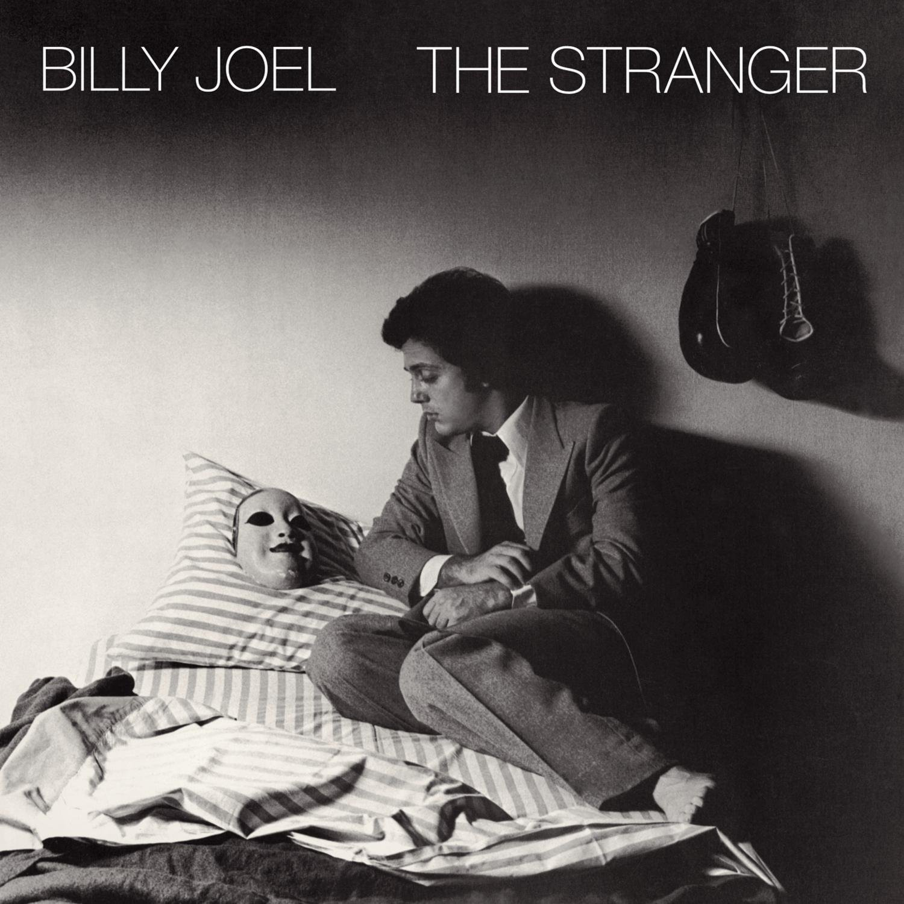

The Stranger
Album by Billy Joel
Released Sep 29, 1977
Recorded Jul – Aug, 1977
Studio A&R Recording, NYC.
Genre Rock · Pop rock
Length 42:34
Label Columbia
Producer Phil Ramone
Songs from The Stranger
Billy Joel. 『The Stranger』
Rock · 1977
「Vienna」
Slow down, you crazy child. You're so ambitious for a juvenile. But then if you're so smart, tell me why are you still so afraid? Where's the fire? What's the hurry about? You better cool it off before you burn it out. You got so much to do and only so many hours in a day.
But you know that when the truth is told. That you can get what you want or you can just get old. You're gonna kick off before you even get halfway through. When will you realize Vienna waits for you?
Slow down, you're doing fine. You can't be everything you wanna be before your time, Although it's so romantic on the borderline tonight. Too bad, but it's the life you lead. You're so ahead of yourself that you forgot what you need. Though you can see when you're wrong, You know, you can't always see when you're right.
You've got your passion. You've got your pride, But don't you know that only fools are satisfied? Dream on, but don't imagine they'll all come true. When will you realize Vienna waits for you?
Slow down, you crazy child. Take the phone off the hook and disappear for a while. It's all right you can afford to lose a day or two. When will you realize Vienna waits for you?
You know that when the truth is told That you can get what you want or you can just get old. You're gonna kick off before you even get halfway through. Why don't you realize Vienna waits for you? When will you realize Vienna waits for you?
Background Music: 『The Stranger』, 「Vienna」, Billy Joel, 3:34, 1977